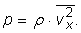
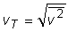
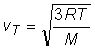
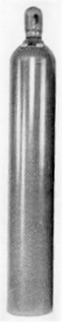
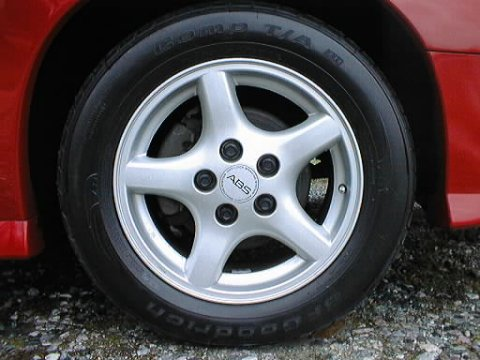
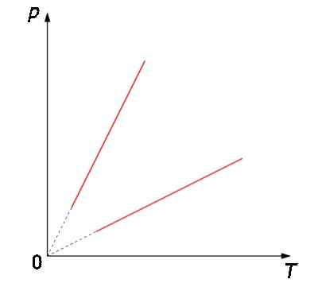
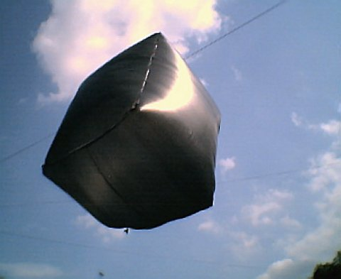
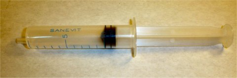

Elemente de termodinamică. |
Transformări simple ale gazului ideal |
Arată că presiunea unui gaz ideal poate fi exprimată în funcţie de densitatea acestuia astfel:

Calculează energia internă a aerului din încăperea în care te afli, considerând aerul gaz ideal, alcătuit practic doar din molecule diatomice.
Răspuns: Aproximativ 2,5·105 J pentru fiecare m3 de aer al încăperii (presupunând că te afli la presiune atmosferică normală!).
Viteza tipică a moleculelor unui gaz ideal (numită viteză termică) este rădăcina pătrată a mediei pătratelor vitezelor acestora: .
a. Cât este viteza termică a moleculelor de azot din încăperea în care te afli?
b. Dar a celor de oxigen?
c. Compară aceste viteze termice cu viteza sunetului în aer. Comentează rezultatul comparaţiei.
Răspuns parţial: Pornind de la ecuaţia de stare a gazului ideal, obţii pentru viteza termică expresia: , M fiind masa molară a gazului.
 Un tub metalic are volumul interior 40 L şi conţine oxigen la presiunea 250 atm şi temperatura 27°C (figura 1).
a. Cât este masa oxigenului din tub?
b. Până la ce temperatură poate fi încălzit tubul fără ca acesta să explodeze, dacă presiunea maximă la care acesta rezistă este 300 atm?
c. Cât este volumul ocupat de oxigenul din tub dacă este eliberat la presiune atmosferică normală şi aceeaşi temperatură?
Răspuns parţial: b. 87°C. Această temperatură poate fi obţinută chiar prin expunere directă la Soare!
Figura 1. Tub cu oxigen.
Într−o anvelopă de automobil (figura 2), având volumul interior 16 L, presiunea aerului este 1,6 atm la temperatura 0°C.

Figura 2. Anvelopa unui automobil.
După ce automobilul începe să ruleze, datorită frecărilor, temperatura anvelopei creşte până la 30°C, iar volumul interior al acesteia se măreşte până la 16,3 L. Cât este presiunea atinsă de aerul din anvelopă?
Răspuns: 1,8 atm. Această creştere de presiune poate influenţa semnificativ ţinuta de drum a automobilului!
Aceeaşi cantitate de gaz este supusă succesiv la două transformări izocore, reprezentate în figura 3.

Figura 3. Două transformări izocore ale aceleiaşi cantităţi de gaz.
Care dintre cele două transformări izocore s−a desfăşurat la un volum mai mare?
Răspuns parţial: Cea a cărei reprezentare grafică în coordonate p−T are panta mai mică.
Baloanele cu aer cald sunt aparate de zbor deosebit de spectaculoase (figura 4).
| Figura 4. Balon cu aer cald. |
Baloanele sunt deschise la partea inferioară, comunicând liber cu atmosfera. Aerul din baloane este încălzit şi devine mai puţin dens decât aerul atmosferic. Datorită diferenţei de densitate, forţa arhimedică asupra balonului poate depăşi greutatea totală a aparatului, acesta ridicându−se în aer!
a. Este oare izobară transformarea la care participă aerul din balon în timpul încălzirii acestuia?
b. Cât este volumul minim al balonului unui aerostat cu masa totală 200 kg, care poate pluti în aer, dacă temperatura interioară este 80°C, iar cea exterioară 20°C?
c. Proiectează şi realizează un balon miniatură, care să plutească în aer! Poţi folosi o pungă mare, cu volumul de câteva zeci de litri, încălzind aerul cu un uscător de păr, sau chiar la Soare (figura 5).
Răspuns parţial: a. Nu! Deşi în interiorul balonului presiunea este mereu cea atmosferică, prin încălzire, o parte din gazul aflat în interiorul balonului iese în atmosferă. Numărul de moli nefiind constant, transformarea nu este izobară!

Figura 5. Un balon miniatural cu aer cald.
În fiecare iarnă depunem eforturi serioase pentru încălzirea încăperilor în care locuim şi lucrăm. Cât din energia transferată de instalaţia de încălzire aerului din încăpere contribuie la mărirea energiei interne a acestuia?
Răspuns: Nimic! Mărind temperatura aerului din cameră, energia internă a aerului care rămâne în cameră este nemodificată. Moleculele de aer care părăsesc încăperea (presiunea rămâne constantă şi egală cu cea din exterior), transferă în exterior TOATĂ energia primită de la instalaţia de încălzire! Cu toate acestea, chiar dacă eficienţa energetică a procesului de încalzire este nulă, AVEM NEVOIE de aer mai cald în jurul nostru pentru a putea "funcţiona" corespunzător.
Pistonul unei seringi se află în dreptul diviziunii 10 mL (figura 6).

Figura 6. Într−o seringă se află 10 mL de aer.
Orificiul de ieşire este blocat şi pistonul este împins lent, până în dreptul diviziunii 2 mL. Cât este presiunea atinsă de aerul din interiorul seringii?
Răspuns parţial: Procesul fiind lent, schimbul de căldură cu aerul din încăpere face ca transformarea să fie practic izotermă, la temperatura mediului.
Pistonul unei seringi, ca cea din figura 6, se află în dreptul diviziunii 0. Orificiul de ieşire este blocat şi pistonul este tras lent până în dreptul diviziunii 10 mL.
a. Cât te aştepţi să fie presiunea atinsă de aerul din seringă?
b. Cum poţi măsura presiunea atmosferică folosind o seringă şi un dinamometru?
Răspuns parţial: a. Practic zero! În interiorul seringii este aproape vid.
Găseşte relaţia dintre presiunea şi temperatura unui gaz ideal care participă la o transformare adiabatică.
Răspuns parţial: Poţi obţine relaţia eliminând volumul între ecuaţia lui Poisson şi ecuaţia de stare a gazului ideal.
O cantitate de aer, aflată iniţial la temperatura 20°C este comprimată foarte rapid, volumul micşorându−se de zece ori. Cât este temperatura atinsă de gaz?
Răspuns: Comprimarea fiind foarte rapidă, procesul este practic adiabatic. Temperatura la finalul compresiei este 463°C! Această temperatură este suficient de înaltă pentru a aprinde materiale combustibile (hârtie, alcool etc).